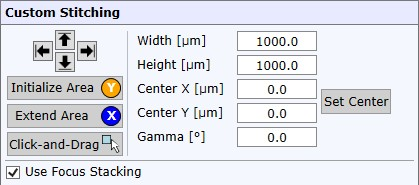

|
自定义拼接
|

自定义拼接允许您通过设置尺寸、中心位置和旋转角度来精确定义拼接面积。
面积定义按钮将帮助您以可视化方式定义参数。
面积定义按钮
箭头按钮
用于定义拼接面积的最左/最上/最下/最右位置。
初始化面积
将自定义拼接面积设置为当前视频位置/尺寸。
扩展面积
通过当前视频图像位置扩展当前拼接面积。
点击并拖动
开启鼠标监听机制：开启后，您可以在图像查看器中点击并拖动矩形来定义拼接面积。
面积参数
宽度 / 高度
设置以微米为单位的拼接宽度和高度。
中心 X / Y
设置拼接图像的绝对中心位置。
设置中心
将中心 X / Y 参数设置为当前位置。
旋转角度
设置拼接的旋转角度（以度为单位）。这样可以对旋转结构进行拼接。
聚焦堆栈
使用聚焦堆栈
如果勾选，将使用当前 聚焦堆栈范围 对每张单张图像执行聚焦堆栈。
请参阅 视频聚焦堆栈常见问题 以获得最佳结果。